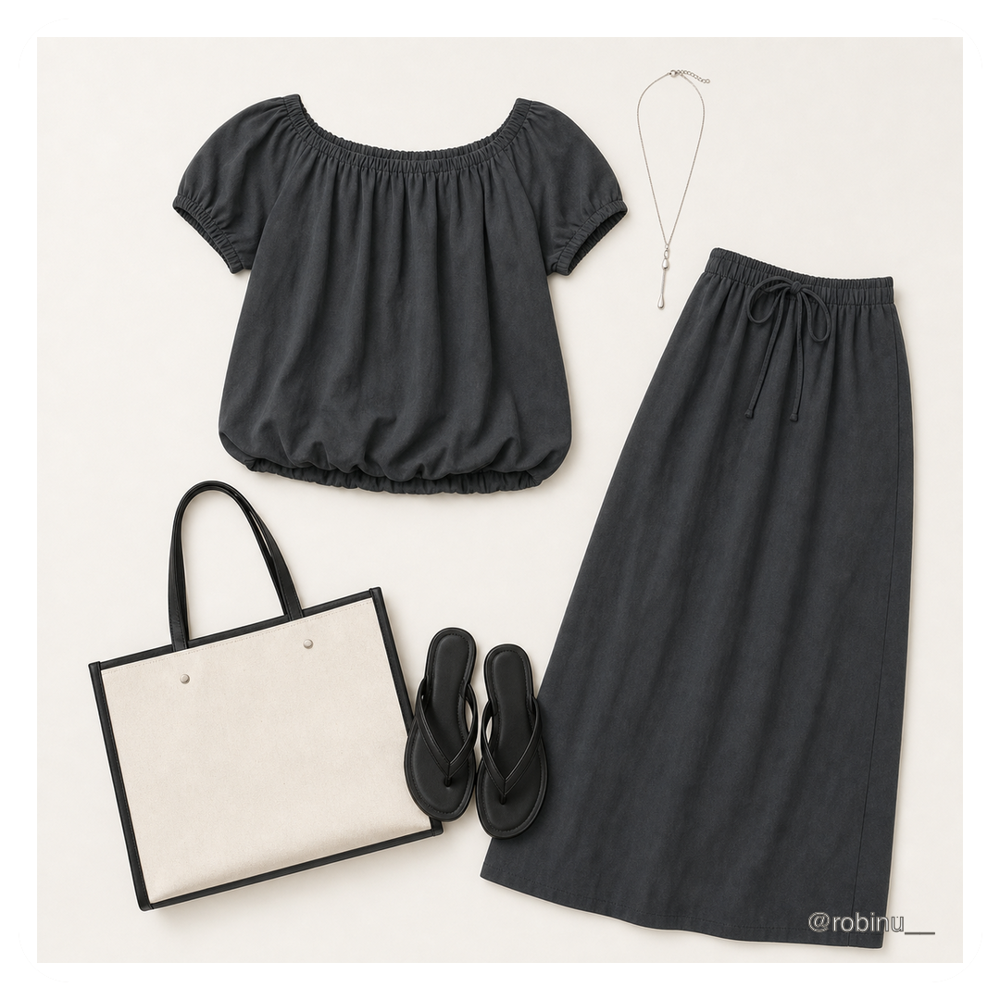
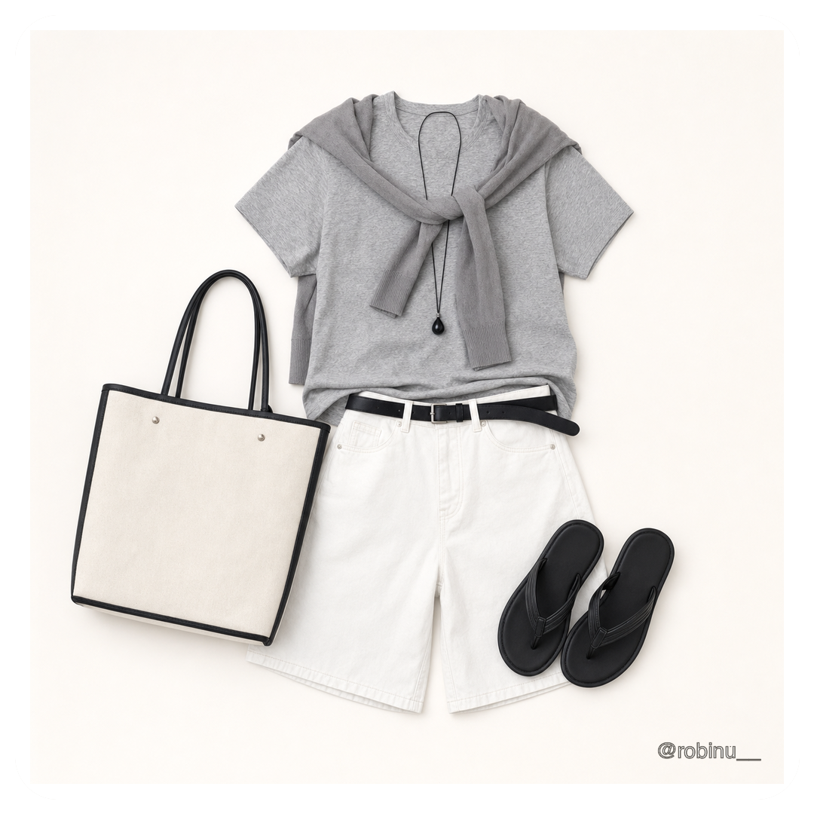

FEATURED FILM
AEROFLEX — Businesswear in Motion
AI Fashion Film · Movement × Performance
AI VISUAL CONTENT DESIGNER
광고 키비주얼, 숏폼 영상, 캐릭터와 제품 캠페인을 기획합니다. 기준 이미지를 설계하고 프롬프트·컷·보정 규칙을 정리해 검토 가능한 결과물로 완성합니다.
AI Fashion Film · Movement × Performance
SELECTED WORK
메인에서는 핵심만 보고, 자세히 보기에서 이미지·영상·제작 과정을 확인할 수 있습니다.
정장의 절제된 실루엣과 스포츠의 역동성을 결합해, 움직임 속에서도 유연하게 반응하는 비즈니스웨어를 표현한 AI 패션 필름입니다.
세대와 스타일이 다른 인물들을 하나의 오렌지·블랙 캠페인 안에서 연결한 숏폼 프로젝트입니다.
캐릭터의 얼굴·헤어·의상·색감을 고정하고, 다른 장면에서도 같은 인물로 읽히도록 제작 규칙을 만들었습니다.


제품 중심 뷰티 필름, 문제 인지 흐름이 중요한 실사형 후기 광고, 여름 스타일링 룩북을 하나의 기업 과제 파트로 구성했습니다.
마감 직전 비어 있는 이력서 사진 칸에서 시작해 셀카 업로드, AI 보정, 실제 프로필 적용까지 보여주는 앱 광고입니다.
PRODUCTION PIPELINE
생성 버튼을 누르기 전에 기준을 만들고, 결과가 나온 뒤에는 선택과 보정을 거쳐 팀이 검토할 수 있는 형태로 정리합니다.
브랜드 목표, 타깃, 매체, 컷 목적과 반드시 보여야 할 요소를 한 장의 제작 기준으로 정리합니다.
인물 얼굴, 제품 비율, 색상, 소재, 조명을 기준 이미지와 금지 조건으로 먼저 고정합니다.
카메라, 동작, 배경, First/Last Frame을 분리해 컷별 프롬프트와 스토리보드를 설계합니다.
실패 컷을 제거하고 형태 오류, 색감, 텍스트, 크롭을 보정해 사용 가능한 장면만 남깁니다.
영상 편집과 사운드, 제작 노트, 이미지 파일을 정리하고 반응형 웹과 공개 링크로 완성합니다.
HOW I WORK
브랜드 목표와 컷의 목적을 먼저 정리하고, 기준 이미지·금지 조건·카메라·조명·동작을 분리해 설계합니다. 결과물은 실패 컷 제거, 이미지 보정, 영상 편집을 거쳐 팀이 검토하기 쉬운 형태로 패키징합니다.
제작 방식 자세히 보기CONTACT
AI 비주얼 콘텐츠, 광고 키비주얼, 숏폼 캠페인 제작 업무가 가능합니다.